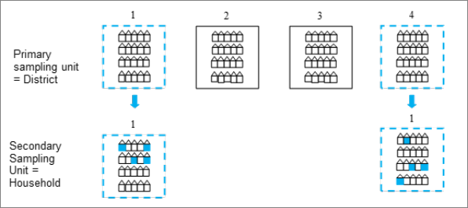
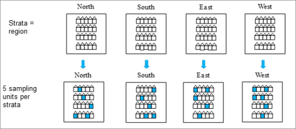

Statistical inference with weights and survey design variables
Practical guidelines using UKDS datasets
Author
Pierre Walthéry and Jennifer Buckley
Published
January 25, 2024
Introduction
This note aims at setting out guidelines for population inference using weights and design variables with UK Data Service social surveys. It focuses on providing users with practical procedures for reliable estimation and only discuss the theoretical underpinnings of the survey design with respect to the sampling or estimation using weighted survey data. The content is based on technical documents by data producers such as the Office for National Statistics as well as the relevant statistical literature. Examples are currently drawn from the UK Labour Force Survey, the Family Expenditure Survey and the British Social Attitudes survey and will gradually be expanded. A list of key references and online tutorials is provided in the bibliography.
Social surveys are data collection exercises that produce datasets enabling researchers and analysts to learn about the characteristics of human populations and societies. This is achieved by way of conducting statistical inference, the process through which unknown quantities (sometimes called parameters) of such ‘large’ populations are estimated with the help of samples that are drawn from them. Estimation of population parameters traditionally consists of computing two pieces of information: a measure of a value of interest also known as the point estimate, such as a mean or a median, together with an indication of its degree of uncertainty or precision (their standard error). Alternatively, one may also want to represent population estimates directly as a range or interval of likely values.
It has been demonstrated that when certain conditions are met, such as when samples are randomly drawn and the sample size is large enough, surveys and the parameter estimates inferred from them are representative of the corresponding target population (Lohr 2019 - 2010). Robust, unbiased estimates are estimates that are not only representative – they reflect the characteristic of interest in the population, but also precise enough for the inference to be meaningful. Unfortunately, in part as a result of design decisions, in part – and increasingly so – due to non response, estimates of population parameters from real-world social surveys based on the raw and unadjusted data present some degree of bias.
It is usually considered that in order to produce robust population estimates from samples, including as much of the survey design information as possible alongside the survey weights is required as these are typically calculated to compensate for the survey design and non-response and coverage errors. Conversely, estimates computed without survey weights or accounting for the survey design will at best present some degree of bias or might even be altogether unreliable. Computing weighted estimates and accounting for survey design requires specific procedures that are not usually very well documented as the relevant statistical techniques are more complex. They are therefore often overlooked in introductory textbooks, and their practical implementation in statistical software not always clear. It is therefore necessary to add some clarity to this situation and provide adequate guidelines in order for users of UKDS data to properly implement robust estimation strategies that are adapted to their needs. This document sets out these guidelines.
1. Basics of Survey Design
At the core of survey design are the strategies used to collect samples. Sample members can either be selected randomly (every individual in the target population has a non-zero chance of selection), an approach also known as probability sampling, or are selected purposively, for example when internet users are self-selecting to take part in an online poll. Random sampling is usually preferred as it minimises the risk of obtaining non representative samples and biased estimates - for example where certain groups of the population are under represented or altogether excluded. Statistical textbooks usually consider that simple random sampling - directly drawing elements at random from a sampling frame – a list of all individual members of the target population - is the best way to allow inference and avoid bias.
This is however difficult to achieve in practice with real life social surveys where no list of the population exists as obtained for example from a national population register. Therefore, in countries without a national population register, other sampling designs can be employed where the sample frame includes alternative units of measurement, such as addressees or schools. In addition, simple random sampling may not be optimal when groups within the population are known to have different probabilities of taking part in surveys or when certain groups need to be over-represented to obtain more reliable and precise statistics.
In summary, designing surveys entails striking a balance between maximising representativeness as well as sample size (for greater precision of the results) while keeping costs down. For these reasons, large scale social surveys tend to produce random samples via other means than simple random sampling. Techniques are employed for example, to ensure each country of the UK is correctly represented, which may involve taking separate samples for England, Scotland, Wales and Northern Ireland to improve precision. Another example is when the survey aims to produce estimates for certain sub-groups, for example the ethnic minorities, and each group needs to be adequately represented.
Two common survey design techniques employed are clustering and stratification.
1.1 Clustering
Clustering usually goes hand in hand with multistage sampling, that is drawing sample units in several stages rather than all at once. It consists of dividing the population into groups that are as internally heterogeneous as possible - one could think of them as ‘mini populations’, some of which are then randomly selected while others are left out.
The UK context
In Great-Britain, the closest to a population register that can be used as a sampling frame is a list of addresses kept by Royal Mail, also know as the Postcode Address File (PAF). For Northern Ireland the most commonly used is the Land and Property Services Agency’s (LPSA). As a list of addresses, the PAF cannot be used to draw a simple random sample of either households or individuals as the number of dwellings, households and individuals at each address in not indicated.
The nature of the PAF address structure easily enables geographical clustering in UK surveys. Addresses, or ’delivery points’ cluster into larger units, for example the post code M13 9PL is embedded within the the M13 ‘post code district’ and the M13 9 ‘postcode sector’. Survey designs often use either postcode sectors or districts as Primary Sampling Units (PSUs) to reduce fieldwork costs and time.

Figure 1: Clustering in two stage sampling
Figure 1 provides a simplified illustration of clustering with four districts. The higher level clusters, i.e. those at which the first random draw happened, are denoted the Primary Sampling Units (PSUs). The dotted lines indicate that districts 1 and 4 have been selected to be in the sample. A second stage of sampling follows, where addresses are sampled from within the two sampled districts and each address may contain one or more households. As a result, of this design we obtain a sample of addresses but these addresses are clustered within a sample of districts. Subsequent drawing of either further clusters, for example, households or drawing final individual sample members, takes place within the already selected PSUs. In large scale surveys the PSUs are often geographical areas.
Household level clustering
A lesser discussed aspect of clustering arises if all individuals at a sampled household are selected. This is the case for our large-scale household surveys in the UK such as the Labour Force Survey. Imagine we are estimating the proportion of individuals who are born outside the UK from a population of 100 people who live in 50 households. We would expect people who are born outside the UK to be more likely to live together than if they were scattered randomly across all households. Instead, we will find them ‘clustered’ within households, with some households being wholly overseas born, some mixed and most wholly UK born.
e.g.
Household 1: 1 UK born individuals
Household 2: 3 UK born
Household 3: 2 Overseas born
Household 4: 6 UK born
Household 5: 1 Overseas born, 1 UK born
Household 6: 2 UK born
Household 7: 1 UK born
Household 8: 1 UK born
Household 9: 5 Overseas born
Household 10: 3 UK born
And so on…
And so on… This clustering within households means that if we are selecting only one in ten of the households for our sample we might expect the sample to be less accurate in predicting the proportion of our population who were born outside the UK than if we had sampled individuals at random.
More generally, using clustering comes at the cost of making the sampling coarser in the sense that we are shrinking the size of the population from which it is going to be drawn - reducing its diversity - which in turn makes the estimates produced from the resulting data less precise. We will come back to this in the next section.
1.2 Stratification
In stratified sampling, the population is divided into groups, or strata, and a sample of units is selected from each strata. Stratified sampling ensures that the sample includes a certain proportion of units from the selected groups that may have been missed otherwise. By contrast with clustering, strata are constructed so as to maximise their internal homogeneity.

Figure 2: An example of stratified sampling
Figure 2 provides a simplified example where the population is divided into four strata: North, South, East and West. Within each strata five sampling units (represented by addresses) are selected.
Common stratification characteristics used in UK surveys are geographical (e.g. Government Office Regions); socio-economic (e.g. proportion of people in the area in certain occupations; car ownership) or demographic (e.g. proportion of people who are pensioners, population density). Such information is usually obtained from Census data.
It is considered that overall stratification increases the precision of survey estimates, by improving the representativeness of potentially less represented or harder to reach groups.
1.3 Proportionate vs non proportionate stratification
In simple random sampling, each element drawn from the sampling frame has an equal selection probability, therefore the sampling fraction is \(n/N\), with \(n\) the sample size and N the population size. This can either be achieved by directly selecting sample units at random or by choosing a random start and sampling at pre-specified intervals – also known as systematic sampling.
In the context of stratified sampling, proportionate stratification refers to cases where the same sampling fraction is used for elements within all stratum: i.e. \(n_h/N_h\) where h represents the strata \(n_h\) the sample size in strata \(h\) and \(N_h\) the population in strata \(h\). We can see this in Figure 2 as the same proportion of units is selected for all strata with a sampling fraction of \(1/4\).
It is sometimes necessary to use disproportionate stratification where the sampling fraction varies across strata. This method is used to increase the numbers of a specific group in the population and is useful when a sub-population of interest is numerically small, like less populated areas or ethnic minority groups. In such a case, \(n_h/N_h>n_{h+1}/N_{h+1}\): the sampling fraction in stratum \(h\) is larger i.e. we are proportionally drawing more units in that stratum relative to its size, than in stratum \(h+1\).
For example, for the British Election Study 2010, respondents from an ethnic minority background were over-sampled as too little was known about ethnic minority voting behaviour. Disproportionate stratification will mean some groups are over-represented in the sample and therefore adjustments are needed before we can analyse the data and this is through the survey weights. Survey weights are also needed to compensate for non-response or when sample frames do not cover exactly the target population of inference. Survey weights are described in the next section.
2 Design-based inference from social surveys
As we have just seen, collecting data about people at random is not necessarily straightforward to achieve. There is no such thing as a sampling frame - a list of all UK residents to pick from - and even if there were one, some people would be less likely to take part to survey than others. As a result most UK social surveys rely on sampling techniques such as multi-stage clustering and stratification, alongside sampling proportionate to size where large PSUs are oversampled compared to small PSUs but the large PSUs have a small proportion of secondary sample units whilst the small PSUs have higher proportions of secondary sample units. This strategy can ensure equal probabilities of selection in a large-scale survey even though the survey is carried out in a multi-stage (clustering) design. Overall, these design techniques are used to strike a compromise between issues such as tackling non response, unequal probability of selection, improving the representativeness of hard to reach groups while keeping fieldwork costs down.
Conducting inference consists of estimating parameters of interest based on the survey data, whether point estimates such as means or median and/or measures of their degree of precision such as confidence intervals or standard errors. Both are potentially affected by the sample design that was implemented during data collection, and need to be adapted accordingly. It is generally accepted that by increasing the sampling fraction for harder to reach groups, stratification improves the precision of estimates, whereas by in effect removing part of the population from the sample, clustering will negatively impact precision. Since most surveys use a combination of both, the impact of survey design will depend on the quantity estimated and the subgroups of the population, if any. Furthermore using survey weights to reflect non-response or unequal probability of selection also affects the precision of estimations - often negatively - and this should ideally be also taken into account when computing estimates of parameters.
Traditional textbooks or introductory courses tend to leave out this aspect, which may give a false impression of simplicity to users. There are traditionally two main ways to produce population estimates from surveys while accounting for the survey design: either by directly using methods that correct estimates for the characteristics of the sample - also known as a design-based estimation - or by modelling the effect of the survey design - the model-based approach. Both have advantages and downsides, but for now we will only focus on the design based approach as it tends to be more straightforward to use for estimating population parameters of interest such as means, medians and totals.
2.1 Survey design variables
Survey Weights are a special type of numeric variable included in survey datasets, whose value reflects the relative ‘importance’ of observations in the sample. They are usually higher for observations from persons less likely to be part of the sample (for example for young men in urban areas), lower for those more likely to be part of the sample (for example women over 50). They are designed to prevent estimates from being biased, that is reflecting a value that is not representative of the population. They are usually made of at least three components:
- a *design* component that accounts for issues of unequal probability of selection of sample members resulting from survey design;
- a *non-response* component, correcting for (known) lower propensity to take part to surveys among certain categories of respondents.
- A *calibrating* or benchmarking component that ensures that weighted demographic variables, such as age, sex and geography, match the current ONS population estimates.
These components are sometimes individually called ‘weights’ in their own right, but in practice they are usually merged into a single variable. Survey weights may also be rescaled in order to inflate sample counts to population totals thus becoming grossing weights which enables estimation of population size. In that sense, the numerical values of the weights attached to observations are an indication of the number of units these observations ‘represent’ in the population.
The computation of weights by survey designers rely on calibration algorithms that optimise the conditional distribution of sample observations across categories of the weighting variables (for example people of a certain age range, gender and economic status) with a view to strike a balance between minimising the standard errors (which depends on the number of observation in each such ‘cell’) and maximising representativeness (making sure that all cells have observations).
Survey design variables typically consist of identifiers for the strata and/or clusters used during the sampling process, especially the Primary Sampling Units (PSU), that is clusters that were drawn during the first stage of sampling. Used in conjunction with weights, they enable researchers to produce more accurate estimates (with the help of dedicated survey estimation functions in statistical packages) than would be the case if solely survey weights had been used. However, whereas most surveys curated by the UK Data Service include survey weights, survey design variables are not always provided by data producers due to data protection concerns.
2.2 Design effects and design factors
In the absence of survey design variables, Design effects (also know as DEFF or \(D_{eff}\) ) and/or Design factors (\(D_{eft}\)) may provide a partial solution to the problem of how to account for survey design. \(D_{eff}\) and \(D_{eft}\) are two versions of a coefficient which attempts to measure the extent to which the standard error of an estimate given the current survey design differs from what it would have been under simple random sampling (Kish 1995). They can therefore be used to broadly assess how sample design affects the precision of a particular set of estimates as well as enabling users to manually correct standard errors and confidence intervals produced under the assumption of simple random sampling.
formally, the \(D_{eff}\) is defined as the ratio of the variance of an estimated parameter of interest to the same variance computed under the assumption of simple random sampling.The \(D_{eft}\) by contrast is the square root of the Design effect. A \(D_{eff}\) with a value \(<1\) indicates a smaller variance than under SRS, therefore an improvement in precision, whereas a value \(>1\) indicates a loss of precision. Data producers sometimes provide Design factor estimates that can be used to correct standard error or confidence intervals that are biased due to having been computed under an assumption of simple random sampling - that is without using survey design information.
3. The practice of inference: things to keep in mind
While the optimum approach to estimating population parameters from surveys relies on using both survey weights and survey design variables, this is not always possible. In practice, trade-offs have to be made depending on several factors. Let us briefly consider them.
3.1 Data availability
Most UK Data Service datasets are available under End User License (EUL). This presents the advantage of enabling large numbers of users to access data with a minimal level of formalities to go through but comes at the significant cost that survey design variables are often not included by data producers, due to concerns about the risk of personal information disclosure. There are notable exceptions, such as Understanding Society, the Health Survey for England or the British National Surveys of Sexual Attitudes and Lifestyles (NATSAL). The British Social Attitudes Survey does also include survey design variables in some of its releases.
For a number of key studies such as the Labour Force Survey or the Family Resources Survey, users may apply for access to a version of the data that does include survey design information via the (virtual) SecureLab or at the UKDS Safe Room. Application for access to these facilities can be a lengthy process, and not practically feasible for all researchers, in particular those outside academia or large organisations. More information on Types of data access can be found on the UK Data Service website. There are also a large number of studies for which such controlled access is not available. The consequence is that in a significant number of cases, there will inevitably be limitations to the level of precision of the estimates most will be able to produce.
3.2 Sensitivity of the analysis
Not all analyses necessarily require the highest degree of precision. Reflecting on the stakes of their intended analysis will help users decide how important it is to strive to use the most robust estimation technique available or instead to settle for one that is ‘good enough’. Typical usages of survey data could be seen as lying on a continuum ranging from ‘playing with the data’ to producing numbers that will be subject to public scrutiny, or that will be used in policymaking. The latter require such a degree of precision – for example when publishing official population estimates or writing a research article, other less so – for instance when exploring data or preparing examples for teaching. In the former cases, users may simply need to get a rough idea of a population estimate or the interval within which it may lie.
3.3 Complexity of the analysis
What an analysis actually entails will help determine whether accessing survey design variables is crucial or not. Estimation involving a small numbers of observations will be more at risk of providing incorrect estimates if survey design variables are not taken into account. Similarly, interest for specific subgroups of the population (also known as domains) rather than the population as a whole will involve more complex estimation techniques as domain estimation needs to account for the distribution of weights in the whole population, not just for the subgroup of interest.
Again, these analytical scenarios could be seen as lying on a continuum ranging from producing simple univariate descriptive estimates for the population as a whole to complex estimation of small groups characteristics and/or multivariate analysis. The former is conceptually and practically more straightforward than the latter. In some cases the estimates of interest may already have been published by the data producer using the adequate estimation techniques and the full information available. Data producers may also have published design factors i.e. numbers allowing to adjust the precision of estimates produced without survey design variables. Examples of such design factors for the Labour Force Survey and the Family Resources Surveys are provided below.
3.4 Software issues
Most statistical analysis software include functions specifically designed to analyse survey data: such is the case of the R Survey package, the SPSS Complex Survey add-on and Stata’s svy: set of commands. However, most statistical software also have options for directly weighting estimation commands outside of procedures accounting for survey design. Solely relying on weighted commands without explicitly declaring the survey design, potentially raises the following issues:
Whereas weighted commands will most of the time compute the correct point estimates, they will also silently produce biased estimates of their precision (standard errors or confidence intervals), based on the incorrect assumption that the sample was collect via simple random sampling. Depending on the survey design, this will lead to under- or over- estimation of standard errors and confidence intervals, and could affect the validity of statistical tests, in particular if small groups within the population are involved.
In addition, there are specific cases where estimation of standard errors and confidence intervals will be not just biased but wholly incorrect: the standard (i.e. command-based) weighting procedure of SPSS and SAS relies on population rather than sample totals to compute them, which results in unrealistic values.
Software such as Stata does not allow users to directly compute confidence intervals or use sampling weights outside of survey commands. This may lead users to rely on ‘quick and dirty’ tricks that will help them quickly produce weighted point estimates, with incorrect standard errors.
3.5 What are we in fact estimating?
Users can choose to prioritise producing weighted point estimates over estimating their precision and the factors that influence it - chiefly survey design variables. It can be tempting to consider that the goal of statistical inference mainly consists in producing ‘representative’ point estimates of a quantity of interest such as the ‘mean weight of adult males’, the ‘median poverty rate’, or the value of some regression coefficient in a multivariate study with estimates of their precision a secondary consideration, or a qualifier of the point estimate.
This is potentially risky. Point estimates can be at the same time representative and imprecise, and therefore carry little practical meaning. It could also be argued that focusing too narrowly on single value population estimates implicitly entertains the idea that such unique, ‘true’ value exist. As these in fact constantly vary, different surveys will return inevitably different estimates.
Instead, conceiving from the start these two aspects as a single reality – a range of plausible values we think a parameter of interest can take in the population, with a certain degree of confidence – could help alleviate such a risk and most importantly provide a more accurate reflection of the reality we seek to describe. Striving to produce confidence intervals whenever it makes sense to do so will help the notion that precision and therefore inevitably survey design are key to robust estimation.
4. Statistical inference with survey data in practice
Ultimately there will be a flowchart here or in the next section
This section provides practical recommendations for robust inference taking into account the factors highlighted in Section 3. In general, four strategies are available when conducting population inference from survey data. They are listed below by order of recommendation by the UK Data Service:
1. Estimation accounting for survey weights and survey design variables using survey-specific commands
2. Estimation accounting for survey weights only using survey-specific commands
3. Estimation using weighted standard commands
4. (Unweighted estimation)
Strategy 1, using survey weights alongside survey design variables when conducting statistical inference is the statistically most robust way to compute population estimates with survey data and should be prioritised by users whenever possible. In real life research however, this option is not always available. Accessing survey design variables can prove challenging as they are not always provided by data producers or may require applying for a special version of the data, which may prove time consuming.
In the absence of survey design information, Strategy 2 should be considered the second best option. The value of point estimates are likely to be identical to those produced under Strategy 1, but the confidence intervals/standard errors will be biased – i.e. too narrow or wide depending on the survey design, which should be explicitly mentioned alongside the results. The data documentation should provide information about how results may be affected. Using survey-specific estimation commands even in the absence of survey design variables is a recommended option over simply applying survey weights to standard commands, as it will avoid getting incorrect estimates (SAS and SPSS), is the only option available for computation with survey weights or obtaining confidence intervals (Stata), or coherent survey data analysis (R). In addition, it might be possible to correct ‘by hand’ biased standard errors or confidence interval using data producer-provided Design Effects.
It can be understandable that when survey design variables are not available some users privilege Strategy 3 which tend to focus on producing weighted estimates using standard commands and give little consideration to the methodological implication of this approach. Whereas point estimates are likely to be identical to those produced under Strategy 1 and 2, SAS and SPSS users are likely to produce incorrect confidence intervals/standard errors. R and Stata users might get standard errors and confidence intervals that are close to those produced using Strategy 2, but there is no guarantee that this will be the case. Overall, the UK Data Service only recommends following this strategy in case of low sensitivity analysis. Here as well, it might be possible to improve the robustness of standard errors and confidence interval using Design factors provided by the data producers.
As population estimates produced without survey weights or survey design variables will almost certainly be unreliable Strategy 4 should be discouraged except when data usage is purely descriptive. For example when teaching non-inferential (i.e. descriptive) statistical techniques.
4.1 Medium to high sensitivity analysis: workflow
Most of the time survey researchers or data analysts are required to produce a confidence interval or provide an indication of the degree of precision of their point estimate, usually with standard errors, whose correct estimation depends on the amount of information held about the survey design.
If survey design variables are available a typical workflow (see examples in Section 5) could involve :
Finding out about the survey design and identify the relevant weights and survey design variables using the data documentation
Declaring the survey design using software-specific commands
Producing the estimates of interest, using survey design specific estimation commands available
Documenting the confidence interval for the estimate of interest or alternatively the point estimates and its standard error.
If required, provide a brief discussion of the possible source of bias of the results (specifically under/over estimation of the uncertainty of the estimates)
If the survey design variables are not included in the EUL version of the data but are available under controlled access: perform a cost vs benefits analysis of applying for controlled access for instance via the UKDS SecureLab, a process that can take some time. Information about how to apply for Secure Lab Access is available on the UKDS website.
If the survey design variables such as strata, cluster, or primary sampling unit are not available an alternative workflow could consist of:
If the user is interested in overall population characteristics, checking whether the estimates of interest may already have been published by the data producer, in which case they may be directly cited instead of computed from data.
Finding out about the survey design in the data documentation and identify the survey weights variable
Declaring the survey design as simple random sampling using software-specific commands
Producing the estimates of interest, using survey design specific estimation commands available
Checking whether the data producer has published design effects that could be used to remedy biased confidence intervals/ standards errors computed without survey design variables (for example design effects computed for the same population at another point in time). A design effect is a number by which to multiply standard errors estimated under the assumption of simple random sampling, that will adjust it for survey design characteristics.
Documenting the resulting confidence interval for the estimate of interest or alternatively the point estimates and its standard error.
If no design effects are available for the estimates of interest, an explicit mention of the likely nature and cause of bias is good practice i.e. under estimation in case of cluster sampling, over estimation in case of stratified sample, usually available from the survey documentation. The wider the initial confidence interval (i.e. computed under SRS assumptions) the larger the likely bias. Or from another perspective, the smaller the (sub)sample, the larger the likely bias. In cases of conducting significance testing with small subsample or groups, it would be a good practice to only consider test outcomes significant at or .
Computing estimates for subpopulations (also known as ‘domains’) rather than for the population as a whole requires extra precautions. This is the case for example when we are interested in the mean age by employment status, or some other categories, or alternatively, in analyses restricted to a subset of the population (for example only those in employment). The key difference is that when computing domain estimates we are in fact producing estimates about a group of the population whose size we also need to estimate. This requires ensuring that the whole distribution of weights in the sample is taken into account, not just the weight values for the groups we are interested in. Failure to do so might result in computing incorrect point estimates and standard errors/confidence intervals. Survey specific commands in statistical software are designed to tackle this potential issue.
4.2 Lower sensitivity analysis
The UK Data Service does not recommend using command-specific or casual weighting for inferential analysis, but there are circumstances where this will be the only option available to users. There are also cases when users are not interested in knowing about the uncertainty of their estimates (i.e. their confidence interval, standard errors of point estimates, or conduct statistical testing), for example because they are simply learning or teaching basic statistical concepts or how to use software.
In such cases, it can be acceptable to compute point estimates by applying weights to commands that accepts them, without using survey design specific functions. Most of these will provide the correct point estimate. By default however, some statistical software will also provide an estimate of standard errors or confidence intervals, which is likely to be misleading as they ‘silently’ assume simple random sampling, and in some cases will carry out computation with population (i.e. grossed) totals, resulting in incorrect values.
5. R examples
The R Survey package (Lumley 2023) provides a comprehensive set of functions for computing point and variance estimates from survey data. At the same time, R Base does not provide a unified sets of commands or syntax for computing weighted estimates. Implementation of statistical theory may vary between packages, but algorithms are usually described in detail in the package documentation.
In this example, we will practice statistical inference with data from the 2017 British Social Attitudes Survey (BSA) taking into account weights and survey design variables. Please note that at the time of writing this document only some issues of the BSA include survey design variables.
5.1 Identifying the survey design and variables
We first need to find out about the survey design that was used in the 2017 BSA, and the design variables that are made available in the dataset. Such information can usually be found in the documentation that comes together with the data under the mrdoc/pdf folder.
Question 1 What is the design that was used in this survey (i.e. how many stages were there, and what were the units sampled). What were the primary sampling units; the strata (if relevant)?
Now that we are a bit more familiar with the way the survey was designed, we need to try and identify the design variables we can include when producing estimates. The information can usually be found in the user manual or the data dictionary available under mrdoc/ukda_data_dictionaries.zip The file may need to be decompressed separately.
Question 2 What survey design variables are available? Are there any ones that are missing – if so which ones? What is the name of the weights variables?
We can specify the survey design earlier identified in the data documentation: using Spoint as Primary Sampling Unit, StratID as strata, and WtFactor as weights. R does this by creating a svydesign object, i.e. a survey design informed version of the data, which will be used for subsequent estimation.
We can now produce a first set of estimates using this information and compare them with those we would have got without accounting for the survey design. We will compute the average (i.e. mean) age of respondents in the sample. We will need to use svymean()
svymean(~RAgeE,bsa17.s)
mean SE
RAgeE 48.313 0.4236
By default svymean() computes the standard error of the mean. We need to
embed it within confint() in order to get a confidence interval.
confint(svymean(~RAgeE,bsa17.s)) ### Just the confidence interval...
2.5 % 97.5 %
RAgeE 47.48289 49.1433
round(c(svymean(~RAgeE,bsa17.s),confint(svymean(~RAgeE,bsa17.s)) ),1)### Estimate and CI, rounded
RAgeE
48.3 47.5 49.1
Question 3 What would be the consequences of weighing but not accounting for the sample design; not using weights and accounting for the sample design when:
inferring the mean value of the population age?
inferring the uncertainty of our estimate of the population age?
5.4 Computing a proportion and its 95% confidence interval
We can now similarly compute the distribution of a categorical variable in the population by estimating proportions (or percentages), for instance, the proportion of people who declare that they are interested in politics. This is the Politics variable in the BSA. It has five categories ranging from 1 ‘A great deal’ to 5- ‘Not at all’. We could recode 1 and 2 - quite a lot into ‘Significantly’, but since we are only interested in estimating the confidence intervals, we will select the relevant values ‘on the go’.
attr(bsa17$Politics,"label") ### Phrasing of the question
[1] "How much interest do you have in politics?"
attr(bsa17$Politics,"labels") ### Value labels
skip, version off route Item not applicable ... a great deal,
-2 -1 1
quite a lot, some, not very much,
2 3 4
or, none at all? Don`t know Refusal
5 8 9
table(as_factor(bsa17$Politics)) ### Sample distribution
skip, version off route Item not applicable ... a great deal,
0 0 739
quite a lot, some, not very much,
982 1179 708
or, none at all? Don`t know Refusal
379 1 0
Note: Changes in a data frame are not automatically transferred into svydesign objects used for inferences. We therefore need to recreate it each time we create or recode a variable.
Let us now compute the confidence intervals for these proportions. Traditional statistical software compute these without giving us an idea of the underlying computations going on. Doing this in R requires more coding, but also a better understanding of what is actually estimated.
Confidence intervals for proportions of categorical variables are usually computed as a sequence of binomial/dichotomic estimations – i.e. one for each category. In R this needs to be specified explicitly via the svyciprop() and I() functions. The former actually computes the proportion and its confidence interval (by default 95%), whereas the latter allows us to define the category we are focusing on.
Question 4 What is the proportion of respondents aged 17-34 in the sample, as well as its 95% confidence interval? You can use RAgecat5
5.5 Computing domain estimates
Computing domain estimates, that is estimates for subgroups adds a layer of complexity to the above example. They key point is that as weights were designed using the whole of the sample, computing estimates, in particular confidence intervals or standard errors for part of the sample, therefore using a fraction of these weights may affect the estimates. Instead, it is recommended to use commands that take into account the entire distribution of the weights.
In R, the command that does this is svyby()
For instance, if we would like to compute the mean age of BSA respondents by Government Office Regions, we need to specify:
The outcome variable whose estimate we want to compute: i.e. RAgeE
The grouping variable(s) GOR_ID
The estimate function we are going to use here: svymean, the same as we used before
And the type of type of variance estimation we would like to see displayed i.e. standard errors or confidence interval
RAgeE ci_l ci_u
A North East 46.1 43.6 48.6
B North West 49.6 47.3 52.0
D Yorkshire and The Humber 48.0 45.2 50.8
E East Midlands 48.6 45.9 51.3
F West Midlands 48.1 45.0 51.2
G East of England 49.0 46.0 52.0
H London 45.0 43.0 46.9
J South East 48.0 45.1 50.8
K South West 53.4 51.5 55.2
L Wales 49.1 45.1 53.1
M Scotland 47.3 44.7 50.0
Note: we used [-1] from the object created by svyby() in order to remove a column with alphanumeric values (the region names), so that we could round the results without getting an error.
Our inference seem to suggest that the population in London is among the youngest in the country, and that those in the South West are among the oldest – their respective 95% confidence intervals do not overlap. We should not feel so confident about differences between London and the South East for example, as the CIs partially overlap.
We can follow a similar approach with proportions: we just need to specify the category of the variable we are interested in as an outcome, for instance respondents who are significantly interested in politics, and replace svymean by svyciprop.
I(Politics == 1 | Politics == 2) ci_l ci_u
A North East 33.4 26.6 40.9
B North West 41.9 36.1 48.0
D Yorkshire and The Humber 35.6 29.1 42.6
E East Midlands 36.9 32.9 41.1
F West Midlands 36.3 31.5 41.5
G East of England 47.2 41.4 53.1
H London 54.2 47.2 61.1
J South East 44.6 38.7 50.8
K South West 46.5 39.4 53.8
L Wales 38.6 27.7 50.7
M Scotland 42.7 36.0 49.8
Question 5 What is the 95% confidence interval for the proportion of people interested in politics in the South West? Is the proportion likely to be different in London? In what way? What is the region of the UK for which the precision of the estimates is likely to be the smallest?
Question 6 Using interest in politics as before, and three category age RAgecat5:
Produce a table of results showing the proportion of respondents significantly interested in Politics by age group and gender
Assess whether the age difference in interest for politics is similar for each gender?
Based on the data, is it fair to say that men aged under 35 tend to be more likely to declare themselves interested in politics than women aged 55 and above?
5.6 Inference without survey design variables using R
Example: count and proportion of the regional population of the UK using the LFS with End User License (EUL)
As a rule, EUL versions of the LFS do not include sample design variables. On the other hand they come with two weight variables:
pwt22 for estimation with the whole sample
piwt22 for estimation of income using respondents currently in employment (and accounting for the high level of non response for the earnings variables)
Estimation without accounting for sample design will likely be biased and should be reported as such including warnings, even if the nature (over or underestimation of the precision) and and size are not known. An alternative is to look for design effects tables published by the data producer which could be used to correct for the bias.
The Office for National Statistics regularly publishes such tables for the LFS, albeit mostly for their headline statistics. Obtaining further design effects for subpopulations might not be straighforward. The overall methodology is described in this note, and updated tables are provided on this page.
Let’s see how this can be achieved. But first, let’s produce uncorrected ‘naive’ estimates of the regional population.
2.5 % 97.5 %
uresmc.fTyne & Wear 375843 544677
uresmc.fRest of Northern region 679067 875001
uresmc.fSouth Yorkshire 361987 542893
uresmc.fWest Yorkshire 892298 1139996
uresmc.fRest of Yorks & Humberside 688398 901578
uresmc.fEast Midlands 1884931 2240257
uresmc.fEast Anglia 1018147 1293525
uresmc.fInner London 1403277 1950147
uresmc.fOuter London 2061142 2573440
uresmc.fRest of South East 5133587 5816347
uresmc.fSouth West 2150551 2532611
uresmc.fWest Midlands (met county) 921916 1255744
uresmc.fRest of West Midlands 1249939 1571219
uresmc.fGreater Manchester 1041396 1341426
uresmc.fMerseyside 473854 749424
uresmc.fRest of North West 929920 1205848
uresmc.fWales 1101246 1410746
uresmc.fStrathclyde 722247 1020673
uresmc.fRest of Scotland 1356361 1750183
uresmc.fNorthern Ireland 689076 803340
In the above example, we are working with the most commonly used flavour of the Labour Force Survey: the quarterly edition. The specific dataset used above is the April-July 2022 issue. Looking at the latest version of the documentation mentioned above - Volume 1, Annex C, we can see a list of design effects for the number of employed respondents by Region of Usual Residence.
Test
We can see that for some reason, the number of regions has been reduced from the original 16 to 13. We therefore need to recode our original variable.
lfs<-lfs%>%mutate(uresmc.fn=case_when( lfs$uresmc.f=="Tyne & Wear"| lfs$uresmc.f=="Rest of Northern region"~"North East", lfs$uresmc.f=="South Yorkshire"| lfs$uresmc.f=="West Yorkshire"| lfs$uresmc.f=="Rest of Yorks & Humberside"~"Yorkshire & Humberside", lfs$uresmc.f=="Inner London"| lfs$uresmc.f=="Outer London"~"London", lfs$uresmc.f=="West Midlands (met county)"| lfs$uresmc.f=="Rest of West Midlands"~"West Midlands", lfs$uresmc.f=="Greater Manchester"| lfs$uresmc.f=="Rest of North West"~"North West", lfs$uresmc.f=="Strathclyde"| lfs$uresmc.f=="Rest of Scotland"~"Scotland",.default=uresmc.f ))
For convenience, reorder the factor levels in order to match the ONS ordering:
Question 1 The 2017 BSA is a three stage stratified random survey, with postcode sectors, adresses and individuals as the units selected at each stage. Primary sampling units were stratified according to geographies (sub regions), population density, and proportion of owner-occupiers. Sampling rate was proportional to the size of postcode sectors (i.e. number of addresses).
Question 2 From the Data Dictionary it appears that the primary sampling units (sub regions) are identified by Spoint and the strata by StratID. The weights variable is WtFactor. Addresses are not provided but could be approximated with a household identifier.
Question 3 Not using weights would make us overestimate the mean age in the population (of those aged 16+) by about 4 years. This is likely to be due to the fact that older respondents are more likely to take part to surveys. Using survey design variables does not alter the value of the estimated population mean. However, not accounting for it would lead us to overestimate the precision/underestimate the uncertainty of our estimate with a narrower confidence interval – by about plus or minus 3 months.
Question 4 The proportion of 17-34 year old in the sample is 28.5 and its 95% confidence interval 26.5, 30.6
Question 5 The 95% confidence interval for the proportion of people interested in politics in the South West is 39.8-53.4. By contrast, it is 47.6-60.8 in London. The region with the lowest precision of estimates (i.e. the widest confidence interval) is Wales, with a 20 percentage point difference between the upper and lower bounds of the confidence interval.
Older respondents both male and female tend to be more involved in politics than younger ones.
The confidence interval for the proportion of men under 35 and women above 55 interested in politics overlaps; it is unlikely that they differ in the population.
6. SPSS Examples
At the time of writing this document (September 2023) Standard editions of SPSS did not include support for estimation with survey design variables, and only limited use of sampling weights. When using grossing weights – i.e. weight that have been designed to enable computing population totals from sample data – as is the case for instance with the Labour Force and Family Resources surveys, measures of dispersion and standard errors will not be adequately computed. It is therefore not recommended to attempt using the base version of SPSS with survey data beyond estimating point estimates. Significance testing, and standard errors will not reflect the correct values. Users wanting to use SPSS with survey data will need to acquire the Premium Edition or the Complex Samples add-on of the software.
In this exercise, we will practice statistical inference with data from the 2017 British Social Attitudes Survey (BSA) taking into account weights and survey design variables. Please note that at the time of writing this document only some of the BSA editions include survey design variables.
6.1 Identifying the survey design and variables
We first need to find out about the survey design that was used in the 2017 BSA, and the design variables that are made available in the dataset. Such information can usually be found in the documentation that comes together with the data under the mrdoc/pdf folder.
Question 1 What is the design that was used in this survey (i.e. how many stages were there, and what were the units sampled). What were the primary sampling units; the strata (if relevant)?
Now that we are a bit more familiar with the way the survey was designed, we need to try and identify the design variables we can include when producing estimates. The information can usually be found in the user manual or the data dictionary available under mrdoc/ukda_data_dictionaries.zip You may need to decompress the file separately
Question 2 What survey design variables are available? Are there any ones that are missing – if so which ones? What is the name of the weights variables?
6.2 Specifying the survey design
Let us first open the 2017 BSA dataset.
CD 'C:\Users\mscsepw2\OneDrive - The University of Manchester\Surveyskills'.
GET
FILE=' BSA\UKDA-8450-spss\spss\spss25\bsa2017_for_ukda.sav'.
In principle, we should tell SPSS that we are working with a three stage stratified cluster sample. In practice however, we only have information about the initial i.e. primary sampling units.
This is achieved with the CSPLAN command through we create a plan file which contains the survey design information.
We can now produce a first set of estimates using this design and compare them with those we would have got without accounting for it. We will compute the average (i.e. mean) age of respondents in the sample, as well as the proportion of male and female respondents aged over 55. We will need to use /CSDESCRIPTIVES
Under the /STATISTICS command we can request either or both the standard error of the mean and its 95% confidence interval.
What difference would it make to the estimates and 95% CI to compute respectively, an unweighted mean, as well as a weighted mean without accounting for the survey design?
SPSS does not provide an option for computing confidence intervals in this case, but we know that a 95% confidence interval is the sample mean respectively minus and plus 1.96 times its standard error. Using the SPSS output, we can compute it ourselves as 1.96*.2872=about .56 years, that is close to 7 months.
Weighted means and CI without survey design
WEIGHT BY WtFactor.
DESCRIPTIVES VARIABLES=RAgeE
/STATISTICS=MEAN SEMEAN.
WEIGHT OFF.
Question 3 What would be the consequences of weighting but not accounting for the sample design; not using weights and accounting for the sample design when:
inferring the mean value of the population age?
inferring the uncertainty of our estimate of the population age?
6.4 Computing a proportion and its 95% confidence interval
We can now similarly compute an estimate of a proportion (or percentage) of a categorical variable in the population. For instance, the proportion of people who declare themselves interested in politics. This is the Politics variable. It has five categories that we are going to recode into ‘Significantly’ (interested) and ‘Not’ (significantly) in order to simplify the analysis.
As with the mean of age earlier, we can see that the weighted and unweighted point estimates of the proportion of respondents significantly interested in politics change, even if slightly, and that they remain the same when survey design is accounted for.
With the help of CSTABULATE we can examine frequencies, proportions and confidence intervals of these proportions accounting for the survey design. As before, the point estimates do not further change once survey design is accounted for.
Question 4 What is the proportion of respondents aged 17-34 in the sample, as well as its 95% confidence interval? You can use RAgecat5
6.5 Domain (i.e. subpopulation) estimates
Although computing estimates for specific groups (for example the average age of people who report being interested in politics) is not conceptually different from doing it for the sample as a whole, doing it with weights as part of an inferential analysis requires some caution. Calculating weighted estimates for a subpopulation while the rest of the sample is left out of the analysis might yield incorrect results. This is why using survey design informed functions is particularly recommended when doing such analyses.
The SPSS command CSDESCRIPTIVES that we used above makes such domain estimation relatively straightforward. If we would like to compute the mean age of BSA respondents by government office regions, we need to specify:
The outcome variable whose estimate we want to compute: i.e. RAgeE
The grouping variable(s) GOR_ID
And the type of type of variance estimation we would like to see displayed i.e. standard errors or confidence interval
Our inference seem to suggest that the population in London is among the youngest in the country, and that those in the South West are among the oldest – their respective 95% confidence intervals do not overlap. We should not feel so confident about differences between London and the South East for example, as the CIs partially overlap.
We can also examine proportions for subpopulations. In order to do this, we need to specify the category of the variable we are interested in as an outcome. For instance, the syntax below uses respondents who are significantly interested in politics:
Question 5 What is the 95% confidence interval for the proportion of people interested in politics in the South West? Is the proportion likely to be different in London? In what way? What is the region of the UK for which the precision of the estimates is likely to be the smallest?
When using CSTABULATE, we can define domains or subpopulations with several variables, not just one. For example, we could look at gender differences in political affiliations by regions. However, as the size of subgroups decrease, so does the precision of the estimates as their confidence interval widens, to a point where their substantive interest is not meaningful anymore.
Question 6 Using interest in politics as before, and three category age RAgecat5:
Produce a table of results showing the proportion of respondents significantly interested in Politics by age group and gender
Assess whether the age difference in interest for politics is similar for each gender?
Based on the data, is it fair to say that men aged under 35 tend to be more likely to declare themselves interested in politics than women aged 55 and above?
Question 1 The 2017 BSA is a three stage stratified random survey, with postcode sectors, adresses and individuals as the units selected at each stage. Primary sampling units were stratified according to geographies (sub regions), population density, and proportion of owner-occupiers. Sampling rate was proportional to the size of postcode sectors (i.e. number of addresses).
Question 2 From the Data Dictionary it appears that the primary sampling units (sub regions) are identified by Spoint and the strata by StratID. The weights variable is WtFactor. Addresses are not provided but could be approximated with a household identifier.
Question 3 Not using weights would make us overestimate the mean age in the population (of those aged 16+) by about 4 years. This is likely to be due to the fact that older respondents are more likely to take part to surveys. Using survey design variables does not alter the value of the estimated population mean. However, not accounting for it would lead us to overestimate the precision/underestimate the uncertainty of our estimate with a narrower confidence interval – by about plus or minus 3 months.
Question 4 The proportion of 17-34 year old in the sample is 28.5 and its 95% confidence interval 26.5, 30.6
Question 5 The 95% confidence interval for the proportion of people interested in politics in the South West is 39.8-53.4. By contrast, it is 47.6-60.8 in London. The region with the lowest precision of estimates (i.e. the widest confidence interval) is Wales, with a 20 percentage point difference between the upper and lower bounds of the confidence interval.
Older respondents both male and female tend to be more involved in politics than younger ones.
The confidence interval for the proportion of men under 35 and women above 55 interested in politics overlaps; it is unlikely that they differ in the population.
7 Stata examples
Stata provides comprehensive support for computing estimates from survey data. Users may either opt to add sampling weights to the standard estimation commands, or use survey-specific commands. The latter is recommended when knowledge of estimate precision is required. Stata provides a conceptual distinction between four types of weights:
frequency weights (fweight),
analytical weights (aweight),
importance weights (iweight) and
probability weights (pweight).
These differences impact on the way standard errors are computed during estimation. In most cases, social survey weights from UKDS datasets should be treated as probability weights. A number of of basic estimation commands, such as summarise do not allow using probability weights. This is an explicit features of Stata, meant to nudge users of survey data to prioritise the survey commands rather than ‘casual’ weighting.
Using standalone weight specification (i.e. not using survey design functions). In Stata it consists in the weighting variable being specified between square brackets. Stata defines four kind of weights:
Only probability weights (abbreviated as pw in most Stata commands) should be used with survey data. However, Stata does not allow using them with its main commands, for the reason highlighted above i.e. in order for users not overlook survey design issues in their data. Therefore, one has to specify instead the wrong frequency weights (fw) if one does not wish to use the survey design functions.
8. Appendix: Study-specific weighting and sample design information
8.1 British Social Attitudes Survey
The BSA is a three stage stratified random survey, with postcode sectors, addresses and individuals as the units selected at each stage. Primary sampling units were furthermore stratified according to geographies (sub regions), population density, and proportion of owner-occupiers. Sampling rate was proportional to the size of postcode sectors (i.e. number of addresses). Some issues of the BSA such as the 2017 include survey design information. The 2017 issue included information about Primary Smapling Units (Spoint), strata (StratID). Weights are called WtFactor.
8.2 Labour Force Survey
The LFS is a geographically stratified random survey. For the main part Primary sampling units are addresses within postcode sectors, drawn from the Small Users Postcode Address File (PAF). The small users PAF is limited to addresses which receive, fewer than 50 items of post per day. In a small number of cases a second stage sampling occurs where several households exist at a given address. A clustering effect is also present to the extent that units of observations are individuals within households, and that some groups are clustered within these, typically ethnicity. LFS weights (all of these include a grossing component that enables estimation of population counts): - PWTxx – person level sampling weight; - PIWTxx - person-level sampling weight for income analysis (i.e. subsample of people in paid work) - PHHWTxx - Household-level sampling weight (for household-level analysis)
8.3 Family Resources Survey
The FRS is a stratified clustered random survey, with survey design differing slightly between countries of the UK. In Great Britain, Primary sampling units are postcode sectors, drawn from the Small Users Postcode Address File (PAF). Before being selected, PSUs are stratified according to geography, proportion of household reference persons from higher social classes in the area, proportion of economically active respondents in the area, and proportion of economically active men who are unemployed. In Northern Ireland, the sample is a systematic random sample of addresses.
Information about Design Effects in the Family Resources Survey series is available here
FRS weights: GROSS4: person-level sampling weight; enables inferring population counts
9. References
Blair, Johnny. 2014. Designing Surveys : A Guide to Decisions and Procedures. 3rd edition / Johnny Blair, Ronald F. Czaja, Edward A. Blair. Los Angeles: SAGE.